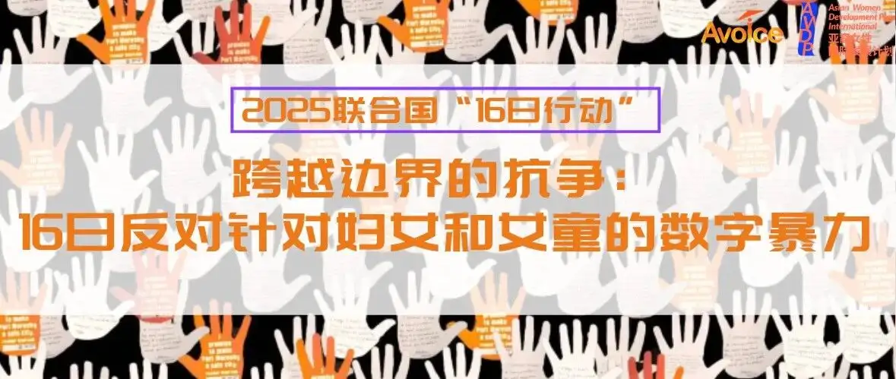
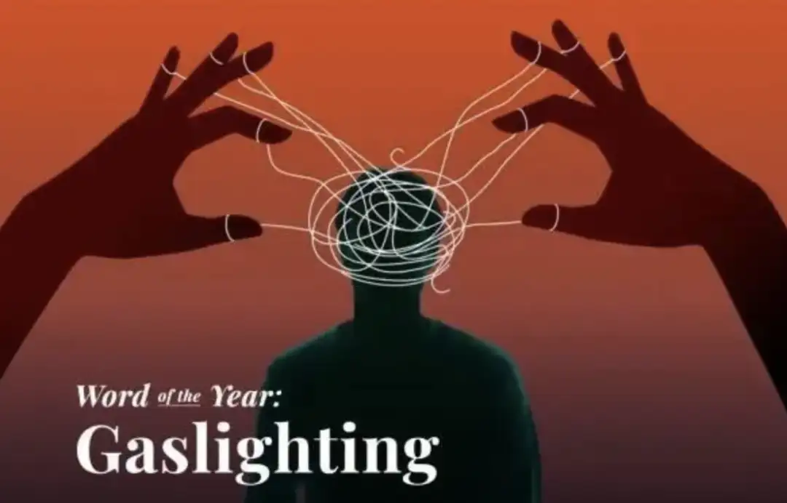
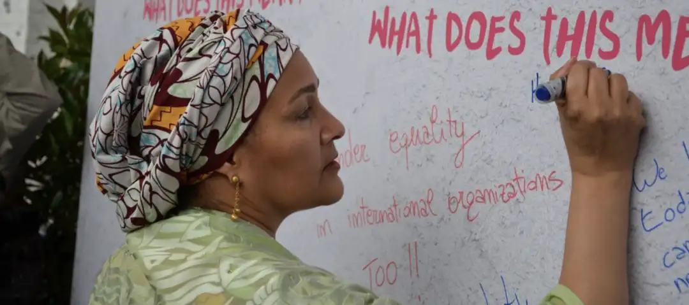
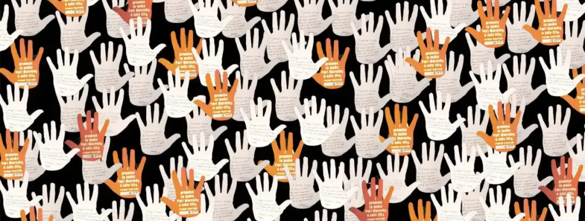

每年11月25日至12月10日，联合国发起的“反对性别暴力16日行动”都会将全世界的目光聚焦于妇女和女童所面临的暴力威胁。
今年，这一行动特别着眼于一个迅速蔓延并刻不容缓的议题——“消除针对所有妇女和女童的数字暴力” 。从网络骚扰、隐私泄露、深度伪造色情内容到线上跟踪，数字空间正成为性别暴力的新战场。
与此同时，今年正值AWDPI（亚裔女性国际发展计划）成立五周年 。五年来，这个跨国公益网络始终致力于倾听与扶助海外亚裔女性，尤其通过其核心项目Avoice，为遭遇家暴的海外华人女性提供系统性支持。
为了应对性别暴力，尤其是数字性别暴力的危害，国际社会的抗争手段正在不断演化、升级，力图用创新的法律法规与科技手段为女性打造安全的网络环境。而AWDPI也正在这场跨越语言，文化和数字疆界 的斗争中，试图为挣扎在暴力阴霾中的女性提供多方面支持。
数字暴力的多层危害与结构性困境
数字暴力并非虚拟的“次要伤害”，而是真实、持续且具有摧毁性的压迫形式。
在当今社会，虚拟和现实交互共生，密不可分。发生在数字平台的针对女性的暴力既是现实中性别结构不平等、以及性别冲突在网络空间的延伸，又反过来提高，刺激了女性在真实世界遭受侵害的可能性。数字暴力借助技术手段，突破了时间与空间限制，对女性的职业，社交和心理均造成严重威胁。
数字暴力具有多种表现形式，其重要形式有：
网络骚扰与欺凌：通过社交媒体、即时通讯或电子邮件发送侮辱、威胁或性暗示内容。对于女性公众人物而言，这类骚扰往往规模更大、更具组织性，意在迫使她们退出公共讨论。
隐私泄露与非自愿传播私密影像：包括“复仇式色情”（未经同意传播私密图像）、人肉搜索、恶意曝光个人资料。此类行为不仅侵犯隐私，更导致受害者遭受社会羞辱、职业歧视甚至线下暴力。
技术助长的跟踪与监控：施暴者利用间谍软件、定位工具、智能设备监控女性行踪与通讯，加剧其恐惧与孤立。在亲密关系暴力中，这类手段常与现实控制交织，令女性难以逃脱。
深度伪造等新兴技术滥用：利用AI技术伪造女性色情影像或言论，进行诽谤、勒索或人格诋毁。这类内容传播迅速且难以消除，对女性名誉与心理造成长期创伤。
针对女性的数字暴力往往并非孤立存在，而是与每一位女性的国别，种族和移民 等政治身份交织在一起。
根据AWDPI统计，超过六成遭受性暴力的女性求助者因语言障碍、签证依附或社交孤立，难以及时获得帮助。不难想象，数字暴力只会进一步加剧其困境。在遭遇网络骚扰后，她们因担心身份暴露、签证受影响或社群排斥，往往选择沉默。
根据美国“停止仇恨亚裔”组织数据，2020–2022年报告事件中近三分之二受害者是女性，种族主义言论常与“顺从”“异国情调”等性别刻板印象结合，使异国女性成为易攻击的目标。
除了看得见的身体伤害，“隐性暴力”正在借助数字平台肆虐。精神控制、语言羞辱、数字骚扰等非物理伤害，常因“证据难以收集”或“不被重视”而遭忽视。2022年，“煤气灯效应”（Gaslighting）成为韦氏词典年度词汇，反映公众对情感操控的认知提升，但司法与社会支持体系仍滞后于这类无形的暴力。

国际社会的法律革新与系统性应对
世界银行统计显示，全球仅不足四成国家立法禁止网络骚扰与跟踪。这意味着约18亿女性——占全球女性总数44%——在数字空间缺乏法律保护。即便在已有此法律的国家，执法效率低、报案程序繁琐、证据认定困难，也使许多受害者望而却步。
数字暴力造成的伤害深远而复杂：它侵蚀女性的自主权与安全感，削弱其社会参与意愿，甚至迫使她们离开职场、学校或公共平台。更严峻的是，它传递出一个危险信号——网络空间是法外之地，女性不应自由发声。
面对数字暴力的全球蔓延，各国政府、国际组织与民间社会正在加快立法、政策与意识层面的应对。近年来，多项突破性法律出台，标志着性别暴力治理正式进入“数字时代”。
2024年4月29日，欧盟正式批准了这项具有里程碑意义的《反暴力侵害妇女行为指令》（Directive on combating violence against women and domestic violence），并于2024年5月20日正式生效，旨在通过预防、保护、起诉和支持等措施，全面打击针对妇女的暴力行为，包括网络暴力、家庭暴力、强迫婚姻、外阴残割（FGM）等，并要求各成员国加强立法和资源投入。
这是其首个专门针对性别暴力的法律文件，具有里程碑意义。该指令不仅将女性外阴残割、强迫婚姻等行为在全体成员国定罪，更首次在欧盟层面将网络性别暴力列为刑事犯罪，明确禁止网络跟踪、未经同意分享私密影像、网络骚扰等行为。该法律为成员国设立最低标准，并要求各国建立专项支持服务。
2021年，墨西哥通过《奥林匹亚法》（Olympia’s Law），该法以网络暴力受害者奥林匹亚·科拉尔·梅洛 (Olimpia Coral Melo)命名，明确将“数字暴力”定义为犯罪，涵盖骚扰、威胁、散布私密内容、人肉搜索等行为。它要求平台快速删除相关内容，并为受害者提供法律与心理援助。
2022年，西班牙通过了“只有是才意味着是”法案(Only Yes Means Yes)。该法将“性同意”置于核心，要求性行为必须基于明确、自愿的同意。平等部长艾琳·蒙特罗（Irene Montero）指出：“任何女性不必再证明自己遭受暴力或恐吓，就能得到尊重。”此法虽主要针对性暴力，但其“积极同意” 原则对认定网络性骚扰与胁迫具有借鉴意义。
此外，国际劳工组织（ILO）也于2019年6月通过了《第190号公约》 （C190 - Violence and Harassment Convention, 2019 (No. 190)）。这是历史上 第一个旨在消除工作领域暴力和骚扰的国际条约。
它明确承认“家暴也会影响工作”，要求雇主采取措施保护受家暴影响的员工。它还首次将“基于性别的暴力和骚扰”纳入全球劳动标准。 这五年来（2020-2025），该公约的批准进程在全球范围内加速，其在包括英国、澳大利亚、加拿大、法国、西班牙等国家均获批。

法律之外，社会观念的转变同样关键。#MeToo运动的影响在近几年持续深化 ，推动公众更深入理解性暴力与权力结构的关系。“以幸存者为中心”原则逐渐成为全球公益组织、司法系统与媒体处理案件的标准——即尊重受害者、避免对其二次伤害，并为受害者提供全方位的支持。
然而，挑战依然存在。法律执行不平衡、数字取证技术门槛高、跨境协作机制缺失，以及对边缘群体（如移民、残障、性少数女性群体）的响应不足，仍是全球治理的短板。这些挑战也是今后国际社会需要努力的方向。
我们要如何帮助遭受性别暴力侵害的女性？
过去五年，全球在反对性别暴力的道路上既迎来突破，也面临前所未有的复杂挑战。从疫情阴影到数字暴力蔓延，从种族仇恨激增到气候危机爆发，这些社会冲突和自然灾害既加剧了女性面对的复杂处境，又要求全球各国给出更加包容和深刻的应对框架。
成立于2020年的AWDPI，正是在这样的大背景下成长起来。作为AWDPI正在运营的重点项目，Avoice通过线上方式，覆盖欧洲、北美、亚太等30多个国家和地区，为每一位遭遇家暴的海外华人女性提供持续、系统性的支持，涵盖语言、心理、法律、社群、救助网络等多个维度。
Avoice不仅提供危机干预，更致力于改变纵容暴力的结构性条件——通过法律赋能、心理重建、社群连接，帮助女性从“幸存者”蜕变为“行动者”。
Avoice的部分支持体系：
语言支持
多语种服务：英语、法语、德语、俄语、荷兰语、捷克语、葡萄牙语、意大利语等
翻译协助：提供口译、笔译服务，协助整理与递交求助材料
手语支持：为听障人士提供线上手语沟通与信息传递
心理支持
心理咨询：分为专家心理咨询和同辈心理支持。提供个性化心理疏导支持，也包括对施暴者的心理干预
心理课程：研发心理疗愈课程与学习资料，助力情绪重建
法律支持
法律信息库：整理并翻译各国反家暴与数字暴力相关法律，建立中文法律数据库，编写普法手册
个案法律建议：为受助者提供法律分析与行动建议
外联协助：提供当地法律援助信息，协助联系律师与相关机构
社群支持
女性互助社群：建立海外华人女性社群，促进同伴支持与经验分享
线上学习活动：开展家暴预防、自我保护、法律普及、心理疗愈与性别意识提升等活动
海外救助网络
救助信息库：整合各国庇护所、医疗、法律、心理、经济援助等信息
资源对接：协助联系当地机构，提供快速、有效的转介服务
采写发声支持
倾听并记录家暴与数字暴力受害者的经历，分享她们走出困境的方法与故事
采访反家暴从业者，传播有效的救助模式与制度经验
多角度呈现家暴影响，包括子女、亲友等相关群体的视角
回望历史，1995年，第四届世界妇女大会通过《北京宣言》，高声宣告“妇女权利即人权” 。三十年过去，这场浪潮已席卷全球，其内涵也从现实空间扩展至数字领域。
AWDPI与Avoice项目，正是在这样的使命中诞生的。无论是遭遇家庭暴力的移民女性，还是被数字平台暴力困扰的留学生，Avoice都在尝试构建一张柔软而坚韧的网，接住那些可能坠落的生命。
16日行动会结束，但抗争不会止步。数字暴力在不断演化，我们的应对也需不断升级——通过更完善的法律、更包容的视角、更紧密的跨国协作，以及更深入的人心觉醒。这条路漫长且艰难，女性追求安全与尊严的道路从未止步——我们或许无法立即终结暴力，但我们可以让更多人知道她们并不孤单。
这条路上，AWDPI与无数行动者并肩前行。

撰稿 | 杜婉莹，孔令雯
编辑 | 伊哲
排版&封面｜池一诺
图片｜Merriam-Webster, UN Website